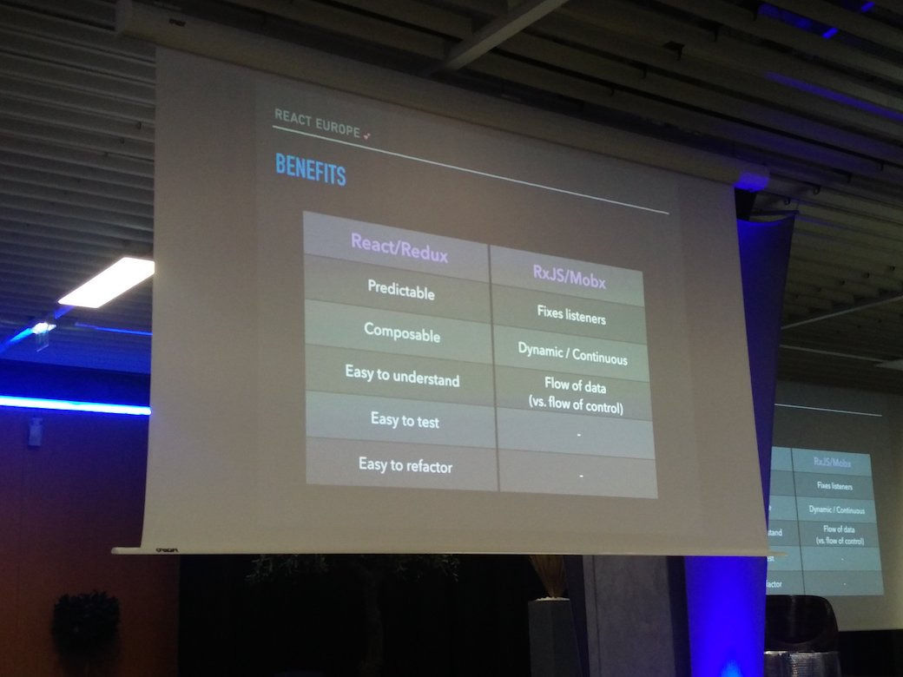
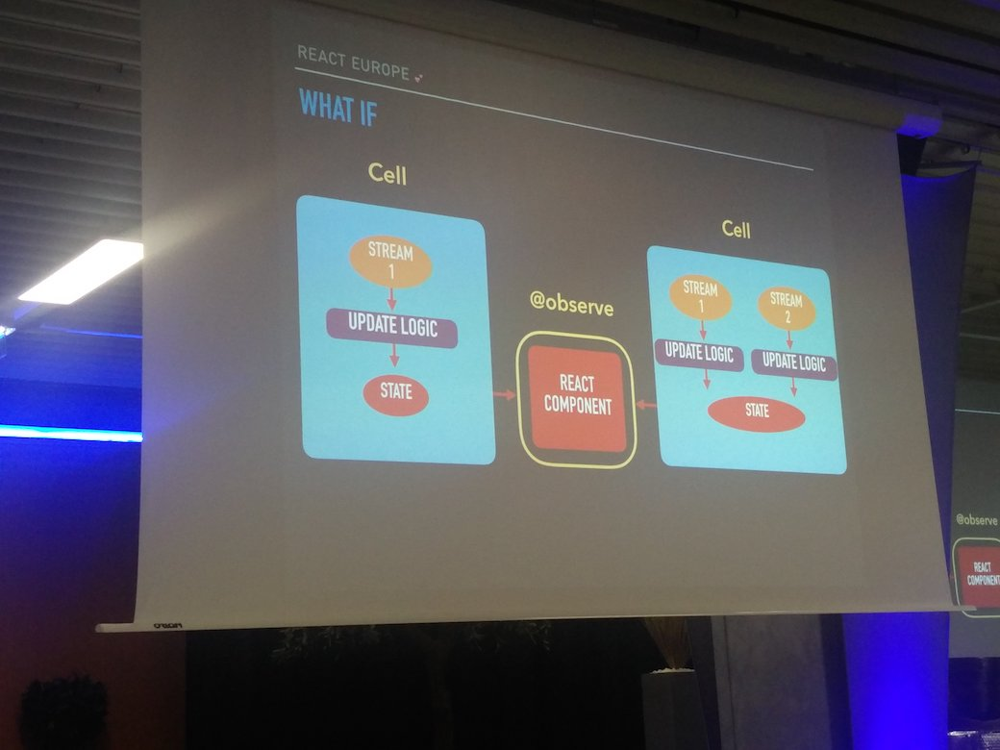
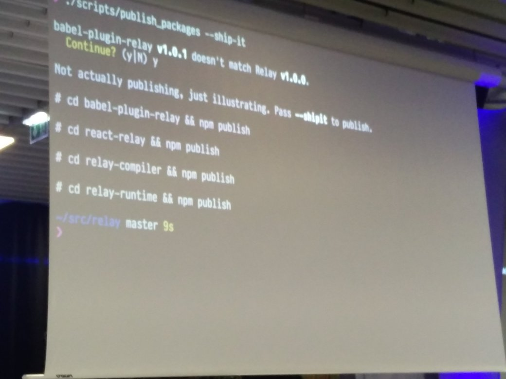
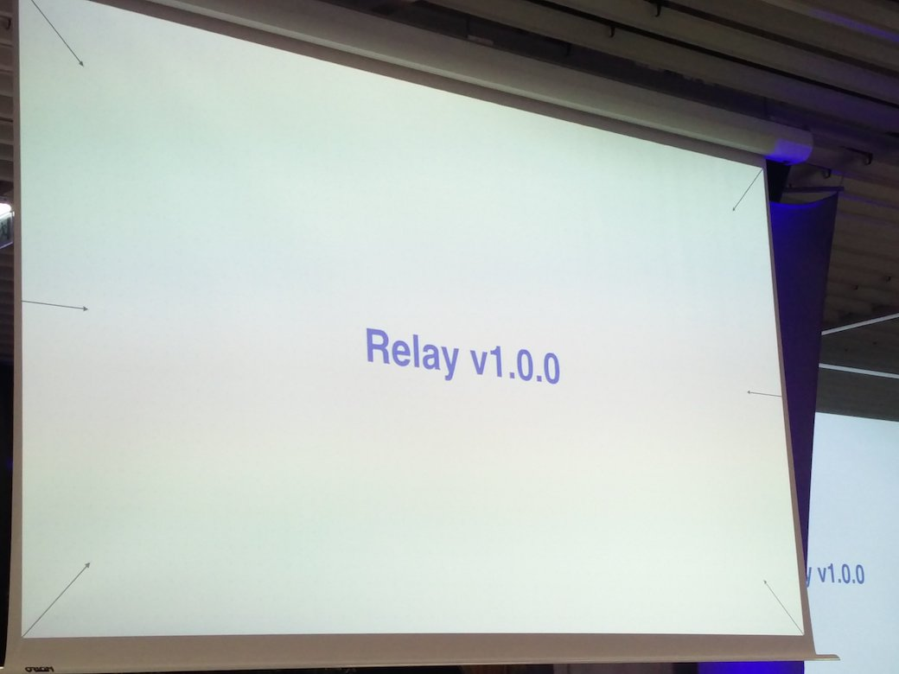
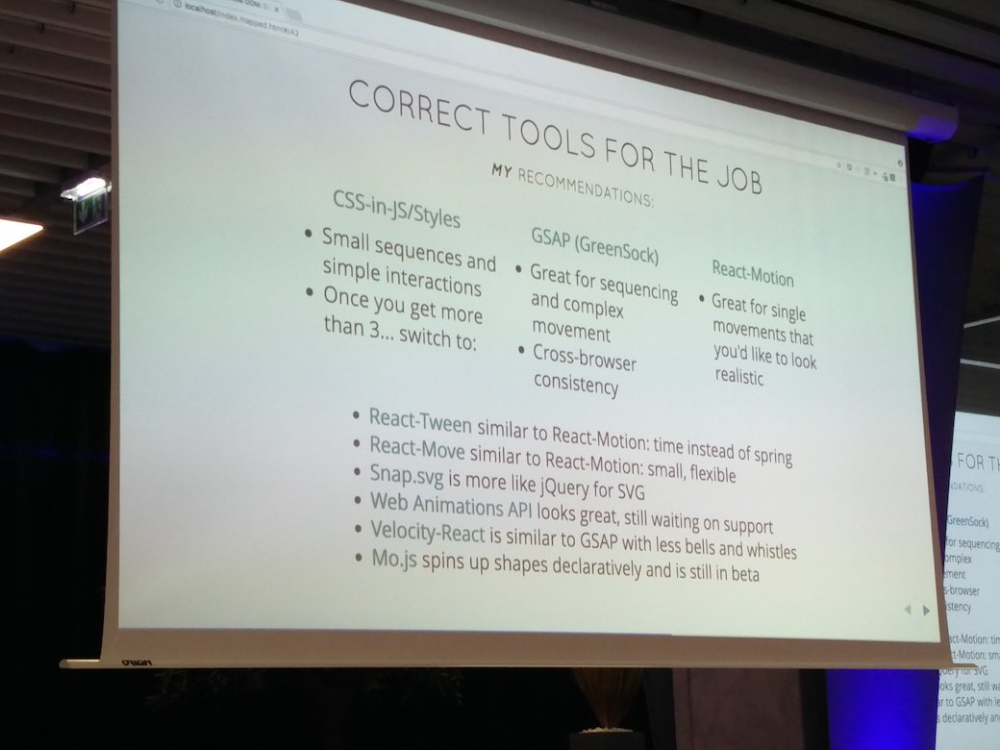
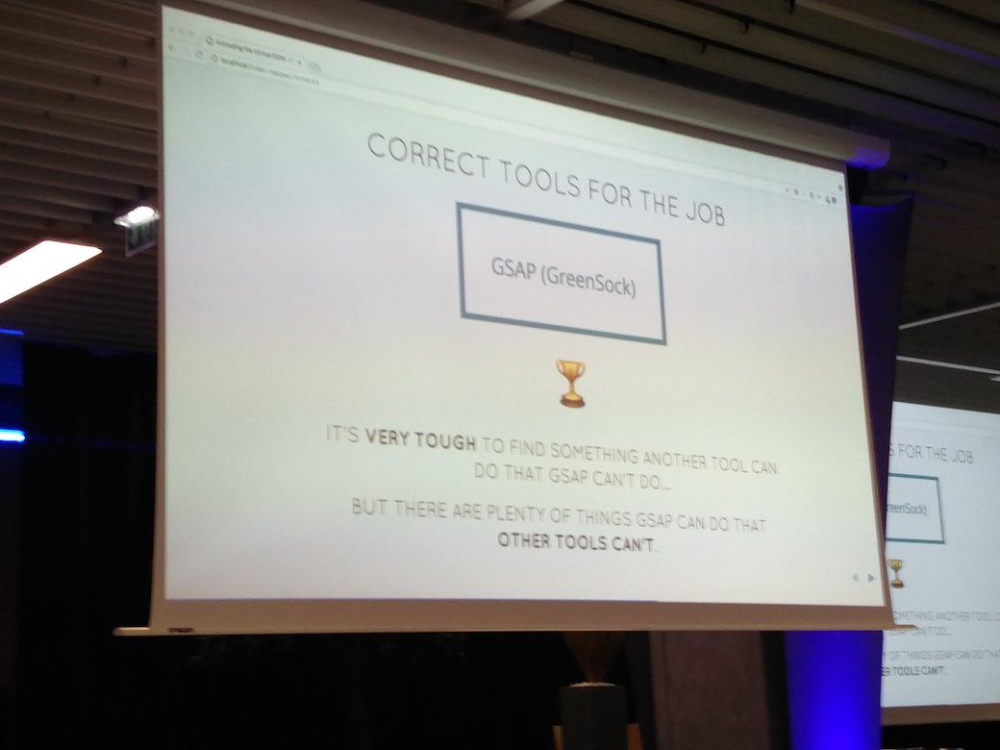
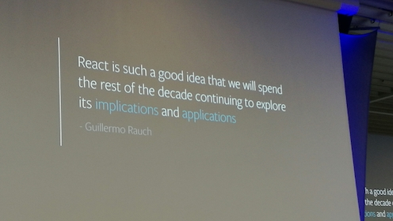

Mobx 10:00 AM
store restore snapshots
- cache
offline
runtime type checking
- replayable actions
Composition 10.30 AM
chain in lodash, limitation : not extendable
pipe versus chaining
- easier syntaxe
pipe
- function composition
pipe(a, b, c, d)
order from d to a and share result between each function until final result
In React ?
Enhance components with functions
import { compose } from 'ramda';
declarative composition for preventing function nesting
Polished : css in js tool with composition
Compose styles to components
Example
const tmpColor = lighten(0.3, '#F50');
Lighten can be composed with any color modification function
Requirements:
- input/output css values in functions
- every function return a function with color as an argument
currying notion : transform each arguments to a function
Native support in some languages
- ReasonML
- ELM
lodash map : Revert arguments for composition
map((name => name), names)
Loading indicator example
Automatically condition Component with a loading state from props
const withLoading = Component => ({ loading }) => (
loading ? <div>loading</div> : <Component />
);
With text
const withLoading = text => Component => ({ loading }) => (
loading ? <div>{text}</div> : <Component />
);
withLoading('Loading')(<section />);
Animation example
In this example 3D rendering is used and the animation of the y axis is extracted in a HOC
Benefits :
- testability
- isolation
- reusability
The making of Twitter Lite 11:00 AM
Issue : slow internet dominates
- 47% 2G connection
- 21% 4G
- other 3G
The need of a very performant PWA
Performance optimization
Painting cycle :
- Splashscreen
- Header
- Content (First meaningful Paint)
- Interactive
Working ideas
- Involving designers with shared language for better interface communication
- Full flexbox layout
Lightning talks 12:00 AM
React key prop
- known performance issue
- Performance benchmark with 5k iterations list with component render of 10ms
Functional component Key ~60.1ms NoKey ~60.3ms
PureComponent Key ~1.3ms NoKey ~19.9ms
Always set keys !!!
Async Import chunks
- stage-3 spec
const React = await import('react');
Can be used to async components
Suggested strategy :
- split app and vendor code
- split at route level (async)
- split at component level (async)
Lunch 12:30 AM

React VR 2:00 PM
VR is hard
Features
- 2D basics
- 3D Concepts
- Multimedia
Goal : easy access to VR with React
Used on prod for Facebook VR videos / photospheres
Dev tools
chrome dev tools... CPU performance audit with timeline
Techniqual stack
State :
- Redux
Testing :
- flow + jest
Architecture
React VR Core Core renderer using system APIS
React VR JS Runtime HMI management with Three.js and browser apis
Layout with facebook/yoga
HMI management
Maximize usage of available device sensors (orientation)
Models
using THREE basic mesh to create custom models for every component. Basically React will wrap every THREE mesh and manage its rendering.
Usage
npm i -g react-vr-cli
Functional && Reactive 2:30 PM
 
Relay 3:00 PM
Responsiveness : UI won't wait for server response to update
GraphQL Fragments
Thousands of components for each platform (web, mobile)
Goal : Maximize client rendering, don't be network dependant
Optimization roadmap :
- defer working operation
- memoization
Relay modern
Application with Facebook : Loads 900ms faster !
New relay compiler to optimize query and file splitting for result
Removing react dependency :
Giving the opportuiny to use every library to plug with Relay modern
New "react-relay" library for react needs
Announcing Relay v1.0.0 !
Deploying

Deployed

Animating Virtual DOM 4:00 PM
twitter@sarah_edo
The future : FIBER \o/ (React 16)
- Animation update preferred to data update
- Priority-based scheduling of updates
"So what" factor : User attention span is short (2 seconds)
Without animation user is badly notified of any content updates
Goran Rakic loaders collection
SVG offers very strong performance and tiny weight
Pro tip !
Animation duration hierarchization inspired by HTML headline tags
For example :
- T1 - 1s
- T2 : .5s etc.
MO.js : motion library
js SVG getTotalLenght on shape to get dash (stroke) length
Motion animation comparison

GSAP rules them all

react-transition-group / react-transition-group-plus
React as a Platform 4:30 PM
twitter@intelligibabble
Step 1 : 3 different platforms
- Swift
- Java
- React / JS
Step 2 : react-native
- mutualization for Android and IOS
Step 3
- react native for the web
Write once, run anywhere ?
React for :
- ubuntu
- windows
- osx
- ios
- android
- ...
React as a cross-platform solution
Example with cnotainers :
HTML rendering
import { Div } from 'react-dom';
VR rendering
import { View } from 'react-vr';
Introducing "react-prmitives"
Components isolation in a dedicated npm package for cross-platform needs
Primitive components !
- View
- Text
- Image
- Stylesheet
- Touchable
- Animated
- Platform
Each component is chosen to represent a specific category for basic interface uses
View, Text, Image : interface structure Styleshet : visual representation Touchable : HMI
Still possible to override react-primitives
import { inject } from 'react-primitives';
import { View } from 'react-native';
inject({ View });
react-primitives will use react-native "View" component instead of default one
Platform extensions
// Button.js
// Button.ios.js
import Button from './Button';
Component will be chosen according to the current platform built
React in sketch plugin
Punchline quote <3

Declarative Animations 5:30 PM
This talk was showing different kind of animation from famous interfaces such as facebook, google or airbnb.
After what a live coding presentation was showing a way of developing a cash rain animation.
Humans and ELM 6:00 PM
https://medium.com/@ReactEurope/reacteurope-2017-interview-5-with-tereza-sokol-32037c54d7c4
React native at Facebook 6:30 PM
Focus on data prefetching for better performance
Experimentation :
- A/B testing
- consistency
- load all experiments at startup and reuse them the entire app session
- when RN is loaded, reuse those same values
Goal was to improve loading sequence with data prefetching
When to use React Native
good for
- New features ; quick dev and results
- Full screen views
- Easy adaptation to webview
bad for
- small view embedding
Party 7:00 PM